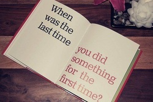

First Line/Last Line Poems are a chance to have fun with prompts. In this case, you are given the first and last lines of a poem and you fill in the middle.|
1. My mother once told me 2. 3. 4. 5. 6. 7. 8. I take back everything I've said |
1. The weather kept getting hotter 2. 3. 4. 5. 6. 7. 8. I didn't mind |
1. I once was afraid 2. 3. 4. 5. 6. 7. 8. Sometimes I still am |
1. After I won the game 2. 3. 4. 5. 6. 7. 8. I don't think I'll do that again |